DreamZero: World Action Models are Zero-shot Policies
Ye, Ge, Zheng, Gao, Yu et al. (NVIDIA, 2026)
WoRV / MaumAI
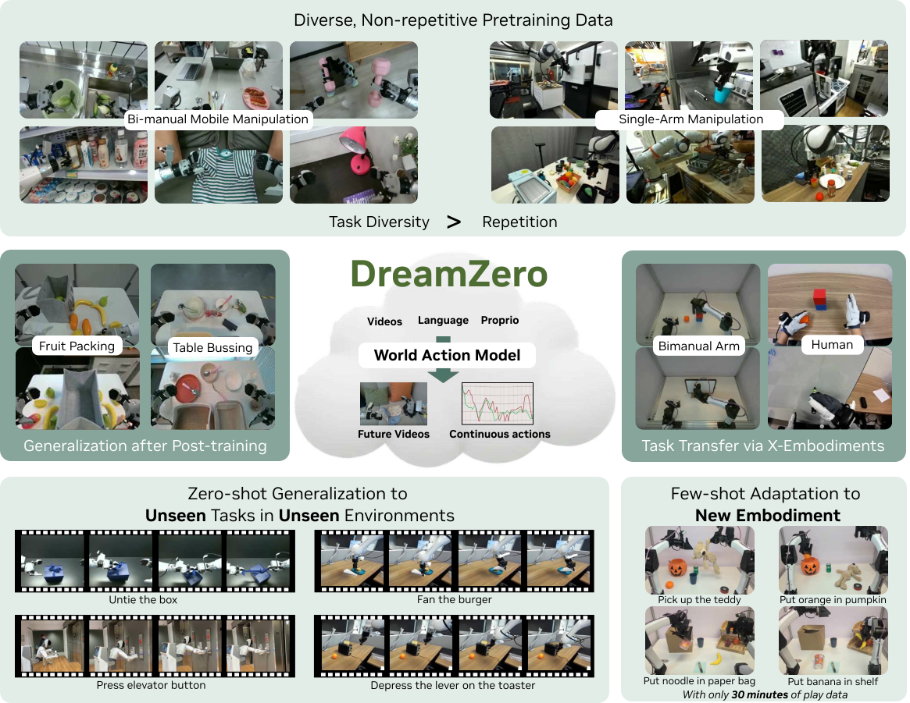
The Second Pre-training Paradigm
1st Paradigm: Next-word prediction \rightarrow Language intelligence (LLMs)
2nd Paradigm: Next physical state prediction \rightarrow Embodied intelligence (World Models)
2026 will go down as the first year that Large World Models lay real foundations for robotics.
— Jim Fan (NVIDIA)
Why Not Just Use VLMs for Robots?
- VLMs are language-first — vision is a “second-class citizen”
- Most VLM parameters encode knowledge, not physics
- Static image–text pretraining \neq spatiotemporal understanding
Commentary: “Language is a bottleneck, a scaffold, not a foundation” for physical intelligence.
The Data Problem in Robotics (1/2)
How much data does each domain have?
LLMs: text from billions of people across history
Vision: images from billions of cameras over decades
Robotics: thousands of hours of teleoperation \rightarrow massive gap
In-the-wild vs. On-demand Data
Text and images are “in-the-wild” — generated continuously. Robot data is “on-demand” — requires expensive teleoperation.
The Data Problem in Robotics (2/2)
You can’t teleoperate your way to the long tail.
— Joel Jang
“Intelligence is a function of experience.”
\Rightarrow Robotics needs vastly more experience to match human-level physical intelligence.
The Rise of VLAs and Their Limitations
Vision-Language-Action Models (VLAs):
- RT-2, OpenVLA, GR00T, \pi_0 (Brohan et al. 2023; Kim et al. 2024; Bjorck et al. 2025; Black et al. 2024)
- Extend VLMs \rightarrow predict motor actions
- Strong semantic understanding: “pick up the red cup”
But:
- Trained on static images \rightarrow lack spatiotemporal priors
- Fail on novel motions: “untie the shoelace”
- Scaling model size alone does not help
VLAs: The Evidence
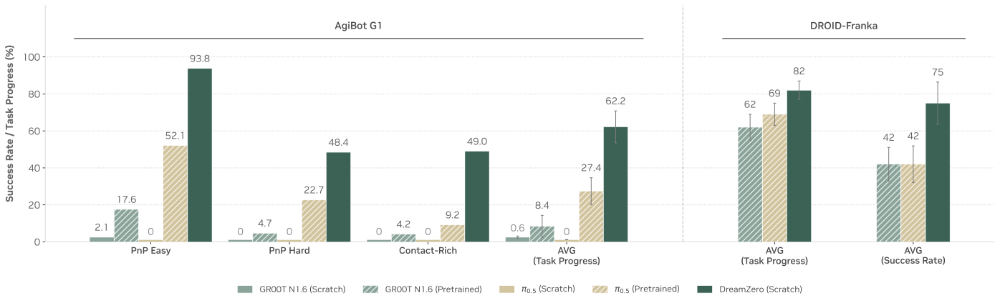
VLA from-scratch at $$0% on diverse data
Commentary: The fundamental gap — VLMs encode “what to do” but not “how to move”.
Key Insight: Video as Dense Physical Representation
Core Idea
Video diffusion models trained on web-scale data encode: spatial geometry \cdot object dynamics \cdot contact physics \cdot motion patterns
- Every consecutive frame pair \rightarrow dense supervision (vs. sparse task-level labels in VLAs)
- “Generating pixels is the only way for humans to verify that the model truly understands” — Joel Jang
The Paradigm Shift
Apes may not have good language models, but they surely have a robust mental picture of counterfactuals.
— Jim Fan
Commentary: This is the core paradigm shift — from discrete task policies to continuous world modeling.
World Action Models: The Big Picture
WAM = Video Prediction \times Inverse Dynamics Model
\underbrace{P(\mathbf{O}, \mathbf{A} \mid \text{ctx})}_{\text{DreamZero}} = \underbrace{P(\mathbf{O} \mid \text{ctx})}_{\text{video pred.}} \times \underbrace{P(\mathbf{A} \mid \mathbf{O}, \text{ctx})}_{\text{IDM}}
IDM (Inverse Dynamics Model): observes a sequence of states and infers what actions caused those transitions — watching video and reverse-engineering motor commands.
- Instead of two separate models \rightarrow single end-to-end model
- DreamZero: 14B autoregressive WAM built on Wan2.1 video backbone (Team Wan 2025)
DreamZero: Headline Results
Key Achievements
- 2\times improvement over state-of-the-art VLAs
- 38\times inference speedup \rightarrow real-time at 7Hz
- Cross-embodiment transfer from video-only data
The Human Data Scaling Pathway
Humans are robots that have already been deployed at scale.
— Joel Jang
The math:
- 8 billion “units” \times 16 waking hrs/day = 128B person-hours per day
- Even capturing 0.1% \rightarrow \approx 100M hours of usable video
- \approx 150 human lifetimes of experience
The vision: “Train once on human experience, deploy everywhere with calibration”
Human Data: Early Signal
Cross-Embodiment Transfer
12 min of human egocentric video \rightarrow >42% relative improvement on unseen robot tasks
Commentary: This is the sleeper insight — human video as the ultimate robot training data.
How Does DreamZero Work?
Architecture & Training
Architecture Overview
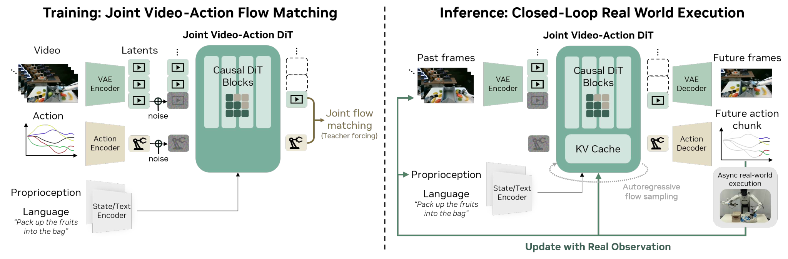
Inputs: Visual context (VAE) Language (text encoder) Proprioceptive state
Backbone: Autoregressive DiT (Diffusion Transformer) with flow matching
Outputs: Joint video frames + action chunks
Why Autoregressive? AR vs. Bidirectional
Bidirectional problems:
- Fixed-length sequences \rightarrow video subsampling
- Distorts native FPS \rightarrow breaks alignment
- Especially harmful mid-task
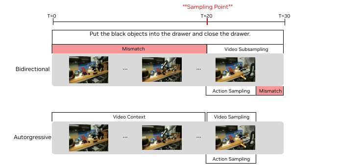
Autoregressive advantages:
- Preserves native frame rate
- KV-cache for 3–4\times speedup
- Natural modality alignment
- Variable-length training
AR vs. Bidirectional: Commentary
Commentary: AR wins on both quality AND speed — a rare “have your cake and eat it too” situation.
- Speed: KV-cache gives 3–4\times speedup — bidirectional cannot cache
- Quality: native frame rate preserves the temporal signal that the IDM needs
Chunk-wise Generation
Chunking Strategy
- Video: K=2 latent frames per chunk
- Action horizon: H=48 (AgiBot, 30Hz) or H=24 (DROID, 15Hz)
- Each chunk \approx 1.6 seconds
- Max 4 chunks \rightarrow 6.6 seconds context
Key design choices:
- Variable-length training (like LLM token sequences)
- Video at 5 FPS, actions at 30Hz (AgiBot)
- 33 raw frames \rightarrow 8 latent frames (4 \times 2)
Flow Matching: Intuition
What is Flow Matching?
Learn a velocity field that transports noise to data along straight paths — simpler and faster than standard diffusion.
Analogy: Think of a GPS that plots a straight-line route from “lost” (noise) to “home” (data). Flow matching learns that route; standard diffusion takes a random walk.
- At t=0: pure noise. At t=1: clean data.
- The model predicts the velocity pointing from noise to data.
- Shared timestep t_k for video and action \rightarrow aligned convergence.
Flow Matching: Equations
Noisy interpolation:
\mathbf{z}_{t_k}^k = t_k \mathbf{z}_1^k + (1-t_k)\mathbf{z}_0^k, \quad \mathbf{a}_{t_k}^k = t_k \mathbf{a}_1^k + (1-t_k)\mathbf{a}_0^k
where \mathbf{z}_0^k, \mathbf{a}_0^k \sim \mathcal{N}(\mathbf{0}, \mathbf{I}) and t_k \in [0,1].
Velocity prediction loss:
\mathcal{L}(\theta) = \mathbb{E}\Bigg[ \frac{1}{K}\sum_{k=1}^{K} w(t_k) \Big\lVert \mathbf{u}_\theta(\cdots) - \mathbf{v}^k \Big\rVert^2\Bigg]
Flow Matching: Notation Guide
Key Symbols:
- \mathbf{u}_\theta: the DiT model (predicts velocity)
- \mathcal{C}_k: clean context from previous chunks
- \mathbf{c}: language instruction
- \mathbf{q}_k: proprioceptive state
- w(t_k): predefined weight function
Teacher forcing: denoise noisy current chunk conditioned on clean previous chunks (like LLM training with ground-truth tokens).
Attention Masking Strategy
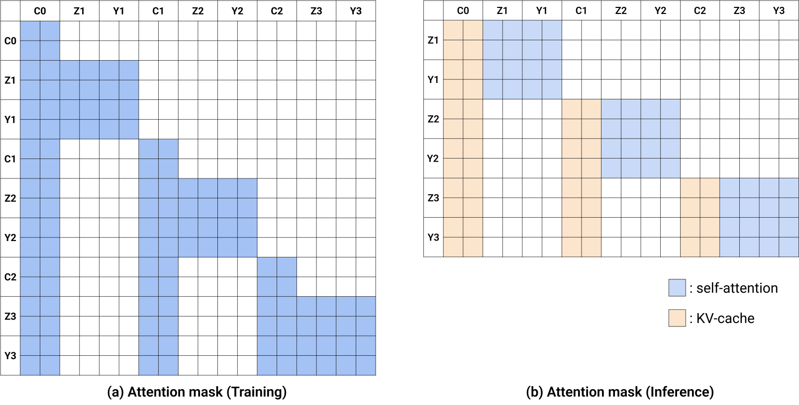
Key Rules
- Training: noisy chunk attends ONLY to clean context
- No cross-attention between noisy video and noisy actions within same chunk
Inference: Ground-Truth Injection
The Elegant Trick
- Denoise one chunk at a time (autoregressive)
- Execute action chunk on robot \rightarrow get real observation
- Replace predicted frame with ground-truth in KV cache
- This eliminates error accumulation!
Why this is unique to WAMs:
- Pure video generation: errors compound
- WAMs operate in closed-loop — reality corrects the model
Ground-Truth Injection: Commentary
Commentary: WAMs self-correct via reality. No other paradigm gets this for free.
- Closes the sim-to-real gap by design, not by domain randomization
- Compare to pure video generation (e.g. Sora) where errors compound indefinitely
DreamZero-Flash: Faster Inference
Problem: 4 denoising steps = 350ms (too slow for some applications)
Solution: Decoupled noise scheduling
- Video: t_{\text{vid}} = 1 - \eta, \eta \sim \text{Beta}(7,1) \rightarrow biased toward high-noise (mean t \approx 0.125)
- Action: t_{\text{act}} \sim \text{Uniform}[0,1] \rightarrow standard
Trains actions to denoise from predominantly noisy visual context.
DreamZero-Flash: Results
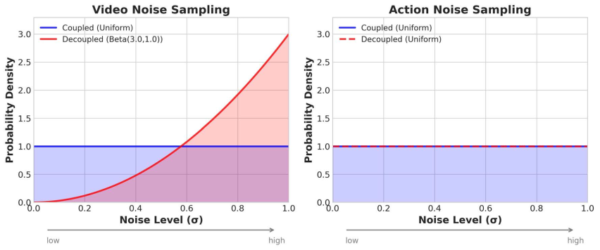
Result
1-step: 74% task progress (only 9% drop from 4-step at 83%)
38\times Inference Speedup Breakdown
| Optimization | H100 | GB200 |
|---|---|---|
| Baseline | 1\times | 1.1\times |
| System-level | ||
| + CFG Parallelism | 1.9\times | 1.8\times |
| + DiT Caching | 5.5\times | 5.4\times |
| Implementation-level | ||
| + torch.compile | 8.9\times | 10.9\times |
| + Kernel & Scheduler | 9.6\times | 14.8\times |
| + Quantization | — | 16.6\times |
| Model-level | ||
| + DreamZero-Flash | — | 38\times |
Final: 14B at 7Hz on 2 \times \text{GB200} (150ms per chunk)
Data Philosophy: Diversity Over Repetition
Counterintuitive Finding
Same 500 hours of data: Diverse (22 envs, long-tail skills): 50% task progress Repetitive (70 tasks, many reps): 33% task progress \rightarrow +51% relative improvement from diversity
Why?
- Video prediction inherited from pretraining
- Robust IDM requires diverse state-action correspondences
- Repetitive data \rightarrow narrow IDM
AgiBot G1 Dataset
Data:
- 500 hours teleoperation
- 7.2K episodes
- 22 real-world environments
- Avg episode: 4.4 min, $$42 subtasks
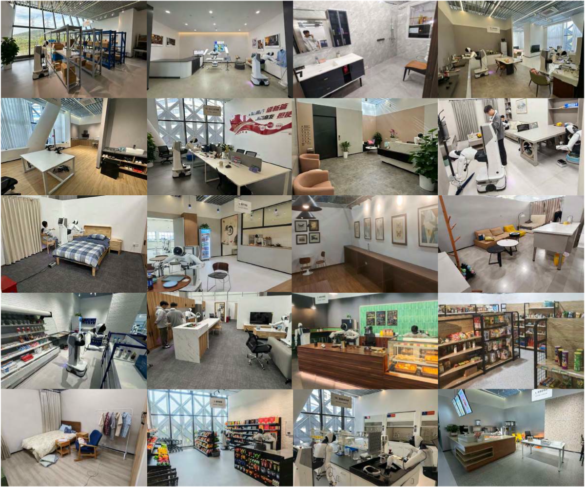
22 diverse environments
Training Configuration
Training:
- Backbone: Wan2.1-I2V-14B
- 100K steps, batch size 128
- Freeze: text enc, image enc, VAE
- Update: DiT + state/action enc/dec
- Post-training: 50K steps per task
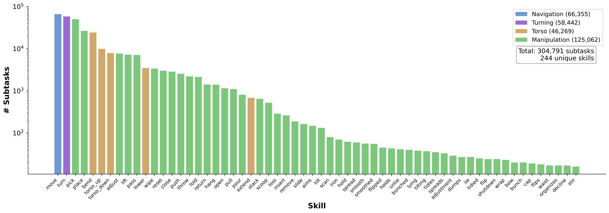
Skill distribution
Evaluation Protocol: Setup
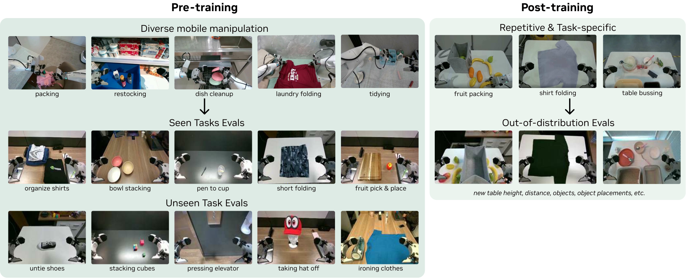
Default: unseen environments, unseen objects Training and evaluation in different geographic locations
Evaluation Protocol: Details
True Out-of-Distribution
- Seen tasks: 10 tasks \times 8 rollouts \times 4 robots = 80 rollouts
- Unseen tasks: 10 tasks absent from training
- Baselines: GR00T N1, \pi_{0.5} (from-scratch & from-pretrained)
Does It Actually Work?
Experimental Results
Seen Tasks: 2\times Improvement
DreamZero: 62.2% avg. task progress Best VLA (pretrained): 27.4% \rightarrow 2.3\times VLA from-scratch: $$0%
Unseen Tasks: Zero-shot Generalization
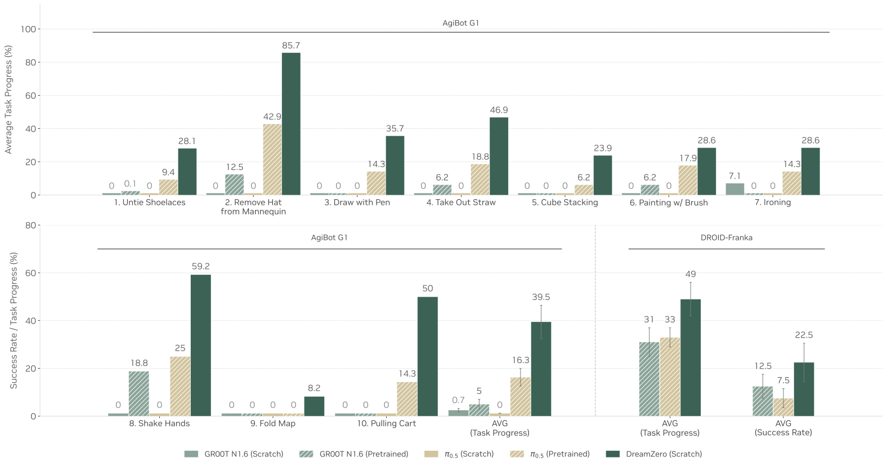
DreamZero: 39.5% on novel tasks Best VLA (pretrained): 16.3% \rightarrow 2.4\times
Unseen Tasks: Standout Results
Standout tasks:
- Remove hat: 85.7%
- Shake hands: 59.2%
VLAs overfit to pick-and-place regardless of instruction.
Commentary: The key result — DreamZero does things it was NEVER trained to do.
Joint Video-Action Prediction in Action

- Tight alignment between predicted and actual trajectories
- Most failures: video generation errors, not action extraction
Post-training: Retained Generalization
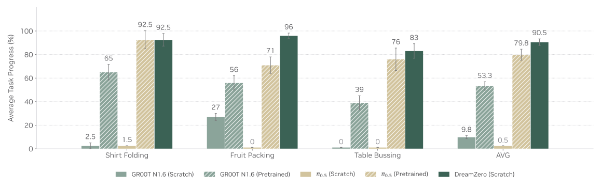
- Matches or outperforms pretrained VLAs
- Evaluated in unseen environments even after task-specific training
Cross-Embodiment Transfer
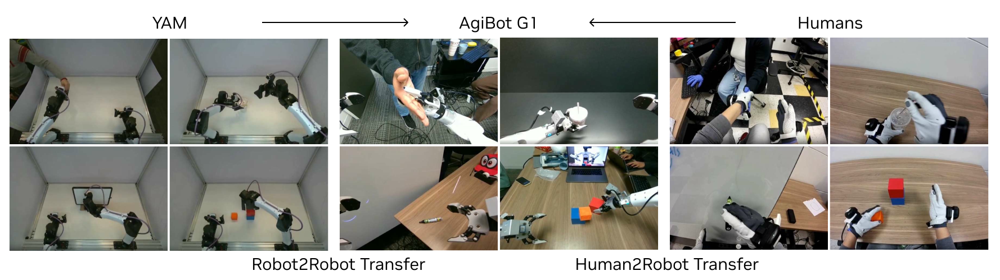
| Method | Task Progress |
|---|---|
| DreamZero (baseline) | 38.3% |
| + Robot2Robot (YAM, 20 min) | 55.4% (+44.6% rel.) |
| + Human2Robot (12 min) | 54.3% (+41.8% rel.) |
Cross-Embodiment Transfer: Commentary
Commentary: Video-only data (no action labels!) opens a massive scaling pathway. Human video is orders of magnitude more abundant than robot data.
- YouTube alone hosts >800M hours of how-to and activity video
- The bottleneck shifts from “collect robot data” to “build a better IDM”
Few-shot Adaptation to New Robot
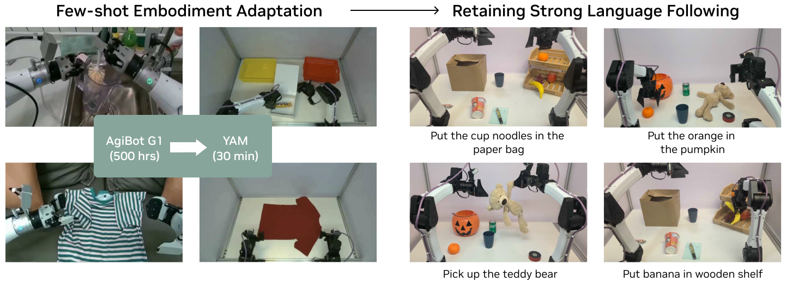
- 55 trajectories ($$30 min play data) on YAM robot
- Retains language following + generalizes to novel objects
Free-form Evaluation

100+ novel tasks via natural language instructions “Pop the balloon”, “Press elevator button”, “Paint”, “Iron clothes”
Ablation: What Matters Most?
| Arch | Size | Data | Progress | |
|---|---|---|---|---|
| Q1. Data Diversity | ||||
| DZ (AR) | 14B | Repetitive | 33% | |
| DZ (AR) | 14B | Diverse | 50% | |
| Q2. Model Scale | ||||
| DZ (AR) | 5B | Diverse | 21% | |
| DZ (AR) | 14B | Diverse | 50% | |
| VLA | 5B | Diverse | 0% | |
| VLA | 14B | Diverse | 0% | |
| Q3. Architecture | ||||
| DZ (BD) | 14B | Diverse | 50% | |
| DZ (AR) | 14B | Diverse | 50% |
All on PnP Easy, 50K steps, batch 32. DZ = DreamZero.
Why VLAs Fail While WAMs Succeed
VLAs:
- Static images \rightarrow no temporal dynamics
- Scaling does not help: 0% at 5B and 14B
- Repetitive data + static priors = overfitting
WAMs:
- Video \rightarrow rich temporal dynamics
- Scaling improves video quality \rightarrow better actions
- Diverse data + video priors = generalization
VLA vs. WAM: Commentary
Commentary: A fundamental architectural difference, not data/compute. VLMs encode semantics; video models encode physics. For robotics, physics wins.
- This echoes the “bitter lesson”: the right representation (video) matters more than scale
- Expect hybrid approaches that combine VLM semantics with WAM physics
Failure Analysis: When DreamZero Breaks
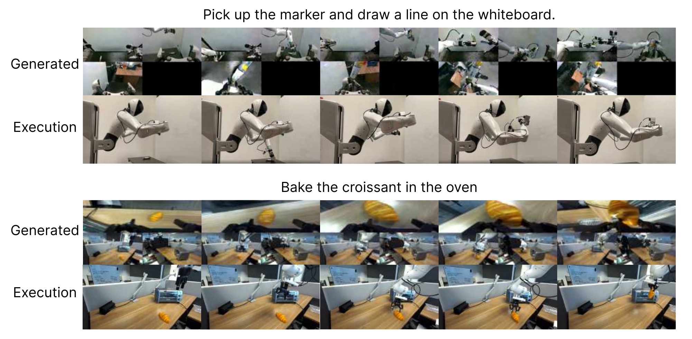
Generated vs. executed trajectory pairs
Primary failure mode: video generation errors (hallucinations, wrong physics)
Failure: Error Causal Chain
Error causal chain:
- Video backbone hallucinates
- Predicted frames show wrong trajectory
- IDM faithfully extracts actions from wrong video
- Robot executes incorrect motion
Commentary: The tight coupling is both strength and weakness — video quality is the bottleneck.
Under the Hood
Code-Level Insights
Code: Multi-Embodiment Architecture
Key Code Patterns
CategorySpecificLinear: separate weights per embodimentMultiEmbodimentActionEncoder: category-specific MLPs- Supports up to 32 embodiments
- Relative action normalization
Commentary (from code): Each robot gets its own “translator” while sharing the world model.
Code: Making 14B Real-Time
Production-Grade Engineering
- VRAM management: dynamic GPU–CPU offloading
- FP8 inference: automatic scaling
- WebSocket server: distributed multi-GPU
- DiT caching: skip forward pass when velocity vectors converge
Code: Quantization Stack
Precision hierarchy:
- Weights + activations: NVFP4
- QKV, Softmax: FP8
- Non-linear ops: FP16
Frame sequence: 880 tokens (33 frames \times $$27 tokens/frame)
Commentary (from code): Far beyond typical research code — production-grade systems engineering.
Code: Data Pipeline
Data Infrastructure
- LeRobot v2 format with GEAR metadata
- Multi-view camera alignment
- Sharded dataset loading (10% per shard)
- Action filtering: remove idle actions
Commentary (from code): Data infrastructure is as important as the model architecture.
What Does It All Mean?
Discussion & Takeaways
Limitations
From the paper:
- No established scaling laws for WAMs
- Context window limited to 6.6 seconds
- Still 7Hz vs. 20Hz+ for VLAs
- Inherits behavior cloning limitations on sub-centimeter precision
- Separate training per embodiment
Limitations: Computational Requirements
Computational requirements:
- 2 \times \text{GB200} GPUs for real-time control
- Not yet feasible on consumer hardware
- 14B parameters = significant VRAM
Long-horizon:
- 6.6s context \rightarrow System 1 only
- Needs System 2 planner for extended tasks
The Unsolved Inverse Dynamics Problem
Adaptation is not free.
The credit card analogy:
- Dexterous hands: slide + pinch
- Grippers: push from edge
- Same task, different motions
IDM complexity scales with DOF:
- Simple grippers: relatively easy
- Dexterous hands: much harder
- Full humanoids: hardest
The Hardware vs. Algorithm Race
Hardware Path
If humanoid actuators mature quickly \rightarrow embodiment matching eliminates transfer loss
Algorithm Path
If embodiment adaptation improves faster \rightarrow intermediate morphologies remain viable
We are back to the age of research — fundamentals matter again.
— Jim Fan
Both paths converge on the same data: human video
Critical Assessment: Strengths
Strengths:
- Comprehensive evaluation protocol
- Honest failure analysis
- Code and weights released
- Multiple embodiments tested
Questions:
- How dependent on GB200 hardware?
- Will this work on consumer GPUs?
- Long-horizon tasks (>6.6s)?
Critical Assessment: What’s Missing
Missing:
- Comparison with other recent WAMs (Cosmos Policy, UVAM) on same benchmarks
- “From-pretrained” baseline used different data
- Multi-embodiment unified training
Commentary: Current zero-shot is “AI Slop” phase (Joel Jang) — correct direction, but not deployment-ready yet.
What DreamZero Means for the Field (1/2)
Personal Assessment
- WAMs represent a paradigm shift: from “policy learning” to “world understanding”
- Jim Fan’s “second pre-training paradigm” is happening NOW
- “Diversity > repetition” could reshape robot data collection
What DreamZero Means for the Field (2/2)
Personal Assessment (cont.)
- Cross-embodiment transfer via video-only data is the sleeper result
- Video backbone quality = policy quality \rightarrow Watch for video model improvements
- “Chain of thought in visual space rather than language space”
Key Takeaways
- WAMs jointly predict video + action \rightarrow better generalization
- Diverse data + video priors = zero-shot robot skills
- AR + teacher forcing + GT injection = elegant inference
- 38\times speedup makes 14B practical
- Cross-embodiment transfer via video-only data
- “Train once on human experience, deploy everywhere”
The future of robotics is video-native, not language-native.
Thank You & References
Paper & Code:
- Ye et al. (2026)
dreamzero0.github.io
Blog Posts:
- Joel Jang: “World Models for Robotics”
- Jim Fan: “The Second Pre-training Paradigm”
Key References:
- Wan2.1 (Team Wan 2025)
- GR00T N1 (Bjorck et al. 2025)
- \pi_0 / \pi_{0.5} (Black et al. 2024; Physical Intelligence 2025)
- Flow matching (Liu, Gong, and Liu 2022; Lipman et al. 2022)
- DROID (Khazatsky et al. 2024)
Q&A